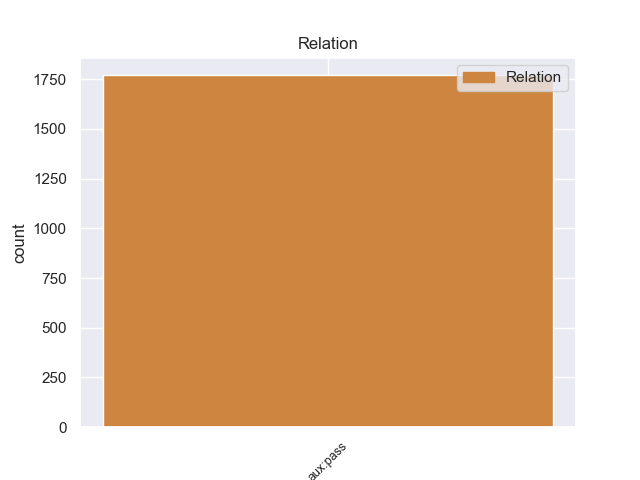
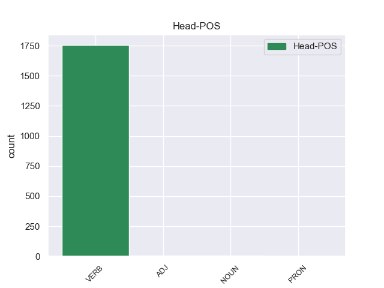
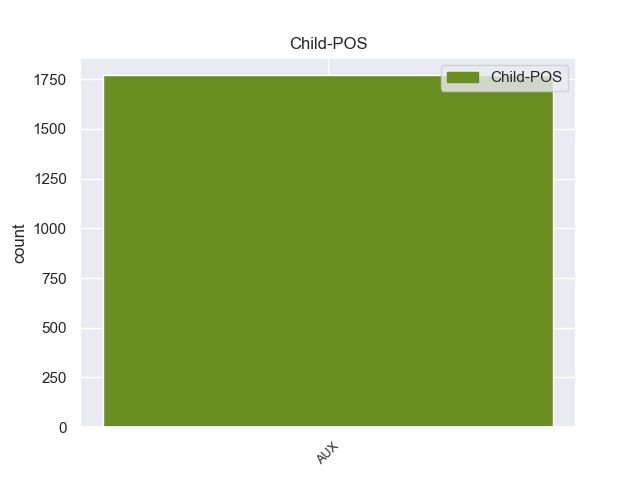

Distribution of features within this leaf



Morphosyntax Rules sorted by frequency.
- When the dependent token is the passive auxiliary(aux:pass) of the head token, and the dependent token is AUX, the Tense needs to be Pres.
1 Questo _ _ _ _ 0 _ _ _
2 tipo _ _ _ _ 0 _ _ _
3 di _ _ _ _ 0 _ _ _
4 riso _ _ _ _ 0 _ _ _
5 è essere AUX VA Mood=Ind|Number=Sing|Person=3|Tense=Pres|VerbForm=Fin 6 aux:pass 6:aux:pass _
6 indicato indicare VERB V Gender=Masc|Number=Sing|Tense=Past|VerbForm=Part 0 _ _ _
7 per _ _ _ _ 0 _ _ _
8 chi _ _ _ _ 0 _ _ _
9 ha _ _ _ _ 0 _ _ _
10 disturbi _ _ _ _ 0 _ _ _
11 di _ _ _ _ 0 _ _ _
12 digestione _ _ _ _ 0 _ _ _
13 , _ _ _ _ 0 _ _ _
14 per _ _ _ _ 0 _ _ _
15 gli _ _ _ _ 0 _ _ _
16 anziani _ _ _ _ 0 _ _ _
17 e _ _ _ _ 0 _ _ _
18 i _ _ _ _ 0 _ _ _
19 bambini _ _ _ _ 0 _ _ _
20 . _ _ _ _ 0 _ _ _
non-conforming Examples:
1 ha _ _ _ _ 0 _ _ _
2 cominciato _ _ _ _ 0 _ _ _
3 Michele _ _ _ _ 0 _ _ _
4 Didoni _ _ _ _ 0 _ _ _
5 , _ _ _ _ 0 _ _ _
6 milanese _ _ _ _ 0 _ _ _
7 di _ _ _ _ 0 _ _ _
8 Quarto _ _ _ _ 0 _ _ _
9 Oggiaro _ _ _ _ 0 _ _ _
10 , _ _ _ _ 0 _ _ _
11 con _ _ _ _ 0 _ _ _
12 il _ _ _ _ 0 _ _ _
13 titolo _ _ _ _ 0 _ _ _
14 in _ _ _ _ 0 _ _ _
15 la _ _ _ _ 0 _ _ _
16 20 _ _ _ _ 0 _ _ _
17 km _ _ _ _ 0 _ _ _
18 di _ _ _ _ 0 _ _ _
19 marcia _ _ _ _ 0 _ _ _
20 ( _ _ _ _ 0 _ _ _
21 De _ _ _ _ 0 _ _ _
22 Benedictis _ _ _ _ 0 _ _ _
23 , _ _ _ _ 0 _ _ _
24 terzo _ _ _ _ 0 _ _ _
25 , _ _ _ _ 0 _ _ _
26 è _ _ _ _ 0 _ _ _
27 stato essere AUX VA Gender=Masc|Number=Sing|Tense=Past|VerbForm=Part 29 aux:pass 29:aux:pass _
28 poi _ _ _ _ 0 _ _ _
29 squalificato squalificare VERB V Gender=Masc|Number=Sing|Tense=Past|VerbForm=Part 0 _ _ _
30 ) _ _ _ _ 0 _ _ _
31 , _ _ _ _ 0 _ _ _
32 ha _ _ _ _ 0 _ _ _
33 finito _ _ _ _ 0 _ _ _
34 la _ _ _ _ 0 _ _ _
35 splendida _ _ _ _ 0 _ _ _
36 Fiona _ _ _ _ 0 _ _ _
37 May _ _ _ _ 0 _ _ _
38 , _ _ _ _ 0 _ _ _
39 londinese _ _ _ _ 0 _ _ _
40 ora _ _ _ _ 0 _ _ _
41 italiana _ _ _ _ 0 _ _ _
42 grazie _ _ _ _ 0 _ _ _
43 a _ _ _ _ 0 _ _ _
44 il _ _ _ _ 0 _ _ _
45 matrimonio _ _ _ _ 0 _ _ _
46 con _ _ _ _ 0 _ _ _
47 l' _ _ _ _ 0 _ _ _
48 astista _ _ _ _ 0 _ _ _
49 lunghista _ _ _ _ 0 _ _ _
50 Gianni _ _ _ _ 0 _ _ _
51 Iapichino _ _ _ _ 0 _ _ _
52 , _ _ _ _ 0 _ _ _
53 con _ _ _ _ 0 _ _ _
54 la _ _ _ _ 0 _ _ _
55 vittoria _ _ _ _ 0 _ _ _
56 in _ _ _ _ 0 _ _ _
57 il _ _ _ _ 0 _ _ _
58 lungo _ _ _ _ 0 _ _ _
59 femminile _ _ _ _ 0 _ _ _
60 . _ _ _ _ 0 _ _ _
1 MILANO _ _ _ _ 0 _ _ _
2 - _ _ _ _ 0 _ _ _
3 Una _ _ _ _ 0 _ _ _
4 ragazza _ _ _ _ 0 _ _ _
5 è _ _ _ _ 0 _ _ _
6 stata essere AUX VA Gender=Fem|Number=Sing|Tense=Past|VerbForm=Part 7 aux:pass 7:aux:pass _
7 rapita rapire VERB V Gender=Fem|Number=Sing|Tense=Past|VerbForm=Part 0 _ _ _
8 a _ _ _ _ 0 _ _ _
9 l' _ _ _ _ 0 _ _ _
10 uscita _ _ _ _ 0 _ _ _
11 di _ _ _ _ 0 _ _ _
12 una _ _ _ _ 0 _ _ _
13 discoteca _ _ _ _ 0 _ _ _
14 e _ _ _ _ 0 _ _ _
15 violentata _ _ _ _ 0 _ _ _
16 per _ _ _ _ 0 _ _ _
17 ore _ _ _ _ 0 _ _ _
18 in _ _ _ _ 0 _ _ _
19 un _ _ _ _ 0 _ _ _
20 box _ _ _ _ 0 _ _ _
21 , _ _ _ _ 0 _ _ _
22 a _ _ _ _ 0 _ _ _
23 Milano _ _ _ _ 0 _ _ _
24 . _ _ _ _ 0 _ _ _
1 La _ _ _ _ 0 _ _ _
2 coppia _ _ _ _ 0 _ _ _
3 è _ _ _ _ 0 _ _ _
4 stata essere AUX VA Gender=Fem|Number=Sing|Tense=Past|VerbForm=Part 5 aux:pass 5:aux:pass _
5 avvicinata avvicinare VERB V Gender=Fem|Number=Sing|Tense=Past|VerbForm=Part 0 _ _ _
6 da _ _ _ _ 0 _ _ _
7 un' _ _ _ _ 0 _ _ _
8 auto _ _ _ _ 0 _ _ _
9 e _ _ _ _ 0 _ _ _
10 aggredita _ _ _ _ 0 _ _ _
11 da _ _ _ _ 0 _ _ _
12 due _ _ _ _ 0 _ _ _
13 persone _ _ _ _ 0 _ _ _
14 armate _ _ _ _ 0 _ _ _
15 di _ _ _ _ 0 _ _ _
16 pistola _ _ _ _ 0 _ _ _
17 , _ _ _ _ 0 _ _ _
18 probabilmente _ _ _ _ 0 _ _ _
19 due _ _ _ _ 0 _ _ _
20 immigrati _ _ _ _ 0 _ _ _
21 di _ _ _ _ 0 _ _ _
22 l' _ _ _ _ 0 _ _ _
23 Europa _ _ _ _ 0 _ _ _
24 di _ _ _ _ 0 _ _ _
25 l' _ _ _ _ 0 _ _ _
26 Est _ _ _ _ 0 _ _ _
27 . _ _ _ _ 0 _ _ _
1 box _ _ _ _ 0 _ _ _
2 che _ _ _ _ 0 _ _ _
3 è _ _ _ _ 0 _ _ _
4 stato essere AUX VA Gender=Masc|Number=Sing|Tense=Past|VerbForm=Part 5 aux:pass 5:aux:pass _
5 trovato trovare VERB V Gender=Masc|Number=Sing|Tense=Past|VerbForm=Part 0 _ _ _
6 in _ _ _ _ 0 _ _ _
7 il _ _ _ _ 0 _ _ _
8 pomeriggio _ _ _ _ 0 _ _ _
9 . _ _ _ _ 0 _ _ _
1 Uno _ _ _ _ 0 _ _ _
2 di _ _ _ _ 0 _ _ _
3 loro _ _ _ _ 0 _ _ _
4 sarebbe _ _ _ _ 0 _ _ _
5 già _ _ _ _ 0 _ _ _
6 stato essere AUX VA Gender=Masc|Number=Sing|Tense=Past|VerbForm=Part 7 aux:pass 7:aux:pass _
7 riconosciuto riconoscere VERB V Gender=Masc|Number=Sing|Tense=Past|VerbForm=Part 0 _ _ _
8 da _ _ _ _ 0 _ _ _
9 i _ _ _ _ 0 _ _ _
10 due _ _ _ _ 0 _ _ _
11 ragazzi _ _ _ _ 0 _ _ _
12 . _ _ _ _ 0 _ _ _